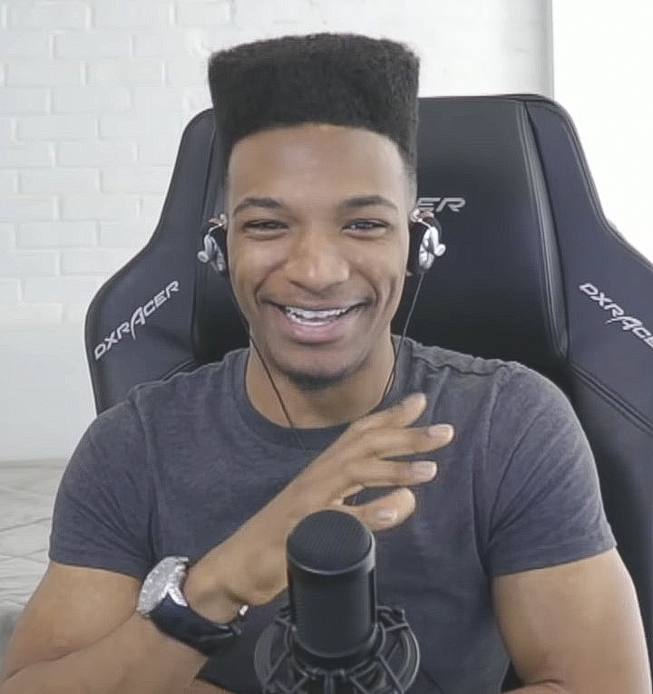

Back to main homepage.

Desmond Daniel Amofah[1] † (born: May 12, 1990 – June 2019 [aged 29]), better known online as Etika, was an American YouTuber and gaming commentator known for his streams and discussion videos about video games or other topics.
Here's a time line of Etika's life.
1990 Desmond Daniel Amofah was born on May 12, 1990 in Brooklyn
2012 He started using YouTube to broadcast his gaming and reaction streams in 2012 under his original username "EWNetwork" (meaning "Etika World Network").
2015 Amofah briefly changed his channel name to "Young Ramsay" in 2015 after cooking scallops, having been inspired by the celebrity chef Gordon Ramsay. Soon afterwards, Ramsay himself followed Amofah on Twitter.
2016 In November 2016, Amofah claimed he had gotten the Nintendo Switch early; he then revealed an accurate model of the console. Various drama channels such as "DramaAlert" reported on it. He would later reveal it to be a fake.
2017 In June 2017, Amofah revealed himself to be the victim of multiple "fake donations", or "chargebacks" of large amounts of money sent to his PayPal account via stream donations, which would jostle Amofah with hundreds of dollars in processing fees.
2018 On October 25, 2018, Amofah uploaded pornography to his YouTube channel EWNetwork (then titled Etika), which violated YouTube's policies and consequently led to the channel's termination. He later had his second channel EtikaFRFX terminated in April 2019 for the same reason. He was also banned from Twitch that year for using a homophobic slur during a stream.
2019 On October 29, 2018, Amofah confirmed on his Twitch stream that he purposefully deleted his channel due to the fact that he does not receive ad revenue from the channel.
2019 On April 16, 2019, Amofah tweeted that he was going to kill himself with a pistol he bought from a gun store in Long Island, which subsequently led to his arrest and hospitalization.
2019On midnight of June 20, 2019, a video titled "I'm sorry" was uploaded to Amofah's personal YouTube channel, "TR1Iceman".[28] In the video, Amofah admitted to having mental health issues, struggling with the attention he had gained from streaming and apologized for pushing people away from him.[15] The description of the video contained a suicide note.[38] YouTube soon removed the video for violating its Community Guidelines, though Amofah's fans reposted the video to other outlets.On the night of June 19, the same day of Amofah's disappearance, his belongings were discovered on the pedestrian walkway of the Manhattan Bridge. They included a backpack, wallet, laptop bag, cell phone, a change of clothes and a Nintendo Switch.On the evening of June 24, a body was observed near Pier 16, approximately half a mile (0.8 km) down the East River from where Amofah's belongings were recovered, and reported to the NYPD.[16] By the morning of June 25, the NYPD and emergency medical services had recovered the body, confirmed it was Amofah, and stated that he was dead at the point of recovery.[44] The following day, the Office of Chief Medical Examiner confirmed the cause of death was suicide by drowning.